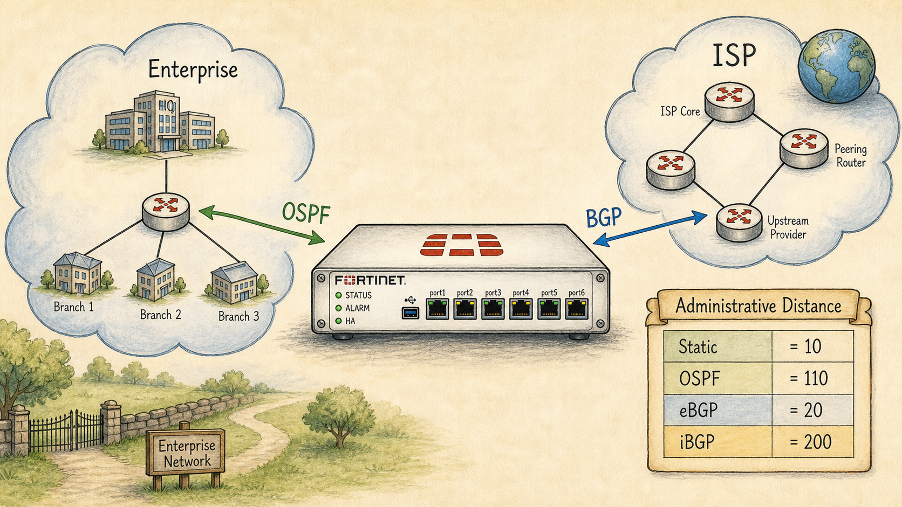

Ready to Begin the Session
| Official NSE7 EF Blueprint Objectives |
|
| Prerequisites | Session 05: Lab Mindset, Reference Topology & Troubleshooting |
| Estimated Duration | 20-25 minutes |
| Phase | Phase 5 — Dynamic Routing: OSPF & BGP |
Session 20 — Why Dynamic Routing on a Firewall Where we are in the NSE7 journey: The FortiGate is now stable. But it has static routes everywhere — and the moment a link fails, the network shudders. Dynamic routing is how the FortiGate learns the network for itself. The problem we're solving today: Static routing scales to roughly three sites before manual labour breaks ops. Dynamic routing is the answer for any enterprise with branches, redundant links, or an ISP that gives you a routing relationship. Session goal: Articulate why a firewall participates in dynamic routing, and decide for a given topology whether OSPF, BGP, or both are appropriate. Key concepts: • IGP vs EGP — inside vs between organisations • OSPF as the dominant enterprise IGP • BGP as the WAN / internet protocol of record • Why a firewall is a first-class routing peer • Administrative distance on FortiGate (Static 10, OSPF 110, eBGP 20, iBGP 200)
Where We Are in the NSE7 Journey

A FortiGate at centre with two arrows leaving it.
The FortiGate is now stable. But it has static routes everywhere — and the moment a link fails, the network shudders. Dynamic routing is how the FortiGate learns the network for itself.
The Problem We're Solving Today
Static routing scales to roughly three sites before manual labour breaks ops. Dynamic routing is the answer for any enterprise with branches, redundant links, or an ISP that gives you a routing relationship.
Key Concepts
- IGP vs EGP — inside vs between organisations
- OSPF as the dominant enterprise IGP
- BGP as the WAN / internet protocol of record
- Why a firewall is a first-class routing peer
- Administrative distance on FortiGate (Static 10, OSPF 110, eBGP 20, iBGP 200)
What We Discovered Together
Parsed from the persistent session summary produced at the end of the Socratic investigation. Use it to rebuild context before a review or a lab.
Session Information
- Session Number20
- TopicWhy Dynamic Routing on a Firewall — IGP vs EGP, OSPF vs BGP, Administrative Distance
- DateJuly 2026
- CertificationFortinet NSE7 Enterprise Firewall 7.6
Story Progress
Setting: Vaultline Financial, one week after the Session 19 VRRP cutover at Meridian branch.
Saturday night, the primary datacenter lost its MPLS connection — a fiber cut upstream, inside the provider's cloud, several hops from Vaultline's edge. The fully-provisioned DR site (own internet breakout, healthy firewall, running servers) never came up automatically. The overnight NOC engineer fixed it in four minutes of typing: one static route on the core router toward the DR public range, one static default adjustment on the edge FortiGate. Total outage: 55 minutes, because nothing detected or reacted until customers called.
Priya's email framed the session: "We have redundant paths everywhere. Why does it take a human typing commands at 2am to actually use them?"
Outstanding problems / cliffhangers- Vaultline's internal network still runs entirely on static routes — OSPF design and deployment is the next engineering arc.
- Neither internet breakout (primary or DR) has a BGP relationship with its ISP — the automated site-to-site failover Priya wants requires it.
- Still open from Sessions 39/40: split-policy architecture for the trading VLAN.
- Still open from Sessions 16/18: VDOM partitioning / virtual clustering thread.
- The overnight NOC engineer was unnamed this session — natural tie-in to Marcus's NOC team (Session 40) next time.
Concepts Learned
2. Neighbor relationships and hellos: routers continuously prove liveness to each other. But hellos only cover the directly connected neighbor — remote failures require the router that SAW the failure to advertise it onward.
3. Distance-vector failure mode: rumor-passing ("I can reach X, N hops") loops when stale beliefs circulate (B trusts C, C trusts B). TTL is the fuse, not the fix — it kills the looping packet (ICMP Time Exceeded at 0) but repairs nothing. RIP patches this with split-horizon, poison reverse, hold-down timers.
4. Link-state (OSPF): routers flood facts about topology (LSAs — "this link exists/died"), not conclusions. Every router holds an identical link-state database and runs Dijkstra independently. Loops are structurally impossible once databases are synchronized; the ONLY way two OSPF routers disagree is mismatched LSDBs (flooding in progress). Reliable flooding (sequence numbers, acks, retransmission) exists to shrink that window.
5. IGP vs EGP boundary: OSPF cannot run the internet — full-topology flooding fails on trust (exposing internal topology to other orgs, letting their instability trigger your recalculation) and on scale (LSA volume + Dijkstra churn creates a self-reinforcing convergence storm). IGP = inside one administration; EGP = between administrations.
6. BGP: peers over TCP port 179; advertises reachability claims ("I can reach these prefixes"), kept alive by the session and revocable via explicit WITHDRAWAL messages. Session death detected by keepalives (60s) vs hold timer (180s); hold-timer expiry flushes ALL routes from that peer.
7. BGP's stability-over-speed philosophy: a session flap withdraws and then re-advertises an entire table (potentially 900k+ prefixes). Twitchy timers at internet scale = route flapping = global update churn; route flap damping (penalty/suppress/half-life/reuse) exists specifically to punish unstable prefixes. OSPF trades stability for speed (small trusted domain, contained blast radius); BGP trades speed for stability (huge untrusted domain).
8. FortiGate Administrative Distance: Static 10, eBGP 20, OSPF 110, iBGP 200. Lower AD wins when multiple sources offer the same prefix. eBGP < OSPF encodes "proximity to truth": a directly-learned eBGP route is the live original source; a redistributed copy in OSPF is secondhand news traveling at OSPF's flooding pace. AD only matters when sources genuinely compete for the same prefix — normally IGP and EGP describe different destinations; redistribution is what creates overlap.
My Understanding
Strong moments- Derived link-state routing from first principles (topology database, failure advertisement, per-router recalculation) before OSPF was ever named.
- "Chinese whispers" analogy for distance-vector rumor decay — spot-on instinct, then correctly traced the B/C two-node loop.
- Correct cold answer on TTL as the loop-breaker, correctly labeled it a routing loop.
- Nailed the deepest link-state question: two routers computing Dijkstra over identical databases cannot disagree; only mismatched LSDBs cause divergence.
- Independently reasoned the internet-scale OSPF death spiral (more subnets → more LSAs → more CPU → more apparent instability).
- Initially framed failure detection as interface state — corrected: static routes already react to interface-down; the protocol exists for failures the local interface can't see (upstream fiber cut with a green local link).
- Genuinely unsure why eBGP (AD 20) outranks OSPF (AD 110); needed the redistribution scenario and two hint rounds to reach "trust the direct source over the secondhand copy." Re-drill candidate.
- Guessed "routing loops" for the named consequence of twitchy BGP timers — actual answer: route flapping / route flap damping. Requested a dedicated bite on this (delivered as extras-04).
- Early on, described BGP failure response in OSPF vocabulary ("recalculate over topology") — corrected to withdrawal-of-a-claim model.
Troubleshooting Experience
No fault-injection lab (concept session per Stage 4 discipline). The entire session functioned as a post-incident review of the Saturday outage: given symptoms (healthy DR, dead MPLS, 55-minute silence), work backward to the missing capability. Key methodology takeaway: "the interface is green" is not evidence the path works — local link state and end-to-end path validity are different questions requiring different detection mechanisms.
Connections
- BackwardSession 19 closed the HA arc and explicitly teed up dynamic routing; Session 15-18 HA thinking (detection timers, blast radius, split-brain) recurs here as the OSPF-vs-BGP timer philosophy contrast. Session 01's cross-domain warning lands: Domain 4 routing underpins Domain 5 ADVPN.
- ForwardOSPF mechanics next (areas, LSA types, DR/BDR, adjacencies — study guide Dynamic Routing Supplement), then BGP on FortiGate (peering config, loopback+multihop, ebgp-multipath, RIB-in/local-RIB/RIB-out filtering, get router info bgp commands), then redistribution done properly. All of it feeds ADVPN later.
Important Takeaways
- Dynamic routing replaces the human, not the route.
- OSPF floods facts (topology); BGP exchanges claims (reachability). Different information models, not just different speeds.
- Only mismatched LSDBs make OSPF routers disagree — flooding exists to make databases identical, fast.
- TTL limits loop damage; it never fixes routing.
- OSPF trades stability for speed; BGP trades speed for stability. Timer defaults encode blast radius (10/40s vs 60/180s).
- BGP rides TCP 179; silence is ambiguous, so keepalives + hold timer decide session death; hold expiry flushes the peer's entire table.
- AD = proximity to truth: Static 10, eBGP 20, OSPF 110, iBGP 200. Redistribution is what makes AD matter.
Future Session Notes
- Reinforcement(a) cold re-drill the AD ladder AND the "why eBGP beats OSPF" reasoning in 1-2 sessions — the value was memorized quickly but the rationale needed coaching; (b) re-quiz route flapping vs route flap damping terminology (extras-04 exists for this); (c) quick retrieval check on OSPF 10/40 vs BGP 60/180 defaults and TCP 179; (d) "facts vs claims" one-liner is the anchor phrase — reuse it when OSPF mechanics start.
- Storynext session should open with the design meeting Priya calls — choosing OSPF for Vaultline's interior. Introduce areas via "should the DR site be in the same area?" Natural characters: Marcus's NOC team wants alerting hooks; Daniel will ask about routing-protocol security (OSPF auth) eventually.
- Spaced repetition dueFGCP internals cold quiz remains the top weakness-register candidate (unchanged).
Podcast Prompt — "The Packet Path"
Write a two-host podcast script for "The Packet Path," a storytelling podcast for network engineers. Host: Alex, an experienced network security consultant. Co-host: Sam, smart and curious, asks clarifying questions. Tone: intelligent, conversational, true-crime documentary style for network engineers. Episode title: "The Route That Nobody Typed." Episode length: 12-15 minutes of dialogue.
The case: A financial company's primary datacenter loses its MPLS circuit to an upstream fiber cut on a Saturday night. A fully-provisioned DR site sits idle for 55 minutes until a NOC engineer manually types two static routes — a four-minute fix. The mystery Alex unravels: the route was never the hard part; the missing piece was anything watching the network and reacting without a human.
Beats to hit, in order: (1) The 2am scene — green interface lights, dead path three hops away; why local link state can't see remote failure. (2) Alex explains hellos and neighbor relationships as a liveness conversation. (3) The rumor problem — Sam plays the naive router: distance-vector, the B/C loop, TTL as the fuse not the fix (ICMP Time Exceeded), RIP's band-aids. (4) The map solution — OSPF floods facts not conclusions; identical databases + independent Dijkstra = loops structurally impossible; the only disagreement is a database mismatch during flooding. (5) The boundary — why the internet can't be one OSPF area (trust between rival companies, CPU death spiral); IGP vs EGP. (6) BGP as diplomatic protocol — TCP 179, reachability claims, explicit withdrawals, keepalive 60s / hold 180s, why slow timers are a feature: a session flap dumps and reloads an entire table; route flapping and route flap damping. (7) The verdict — OSPF trades stability for speed, BGP trades speed for stability; and the FortiGate AD ladder (Static 10, eBGP 20, OSPF 110, iBGP 200) as "proximity to truth," with the redistribution twist explaining why a route from your ISP outranks your own IGP's copy. Close with Alex's line: "Dynamic routing doesn't replace the route. It replaces the person who would have typed it."
Sam should ask: "But the interface was green — how can the path be dead?", "Why doesn't the packet just loop forever?", "If BGP is so important, why is it slower to react?", and "Wait — why would I ever trust my ISP's route over my own network's?"
Guides, Bites & Nibbles
Additional resources sorted to this session — deeper guides, focused explainers, and quick-reference cards.